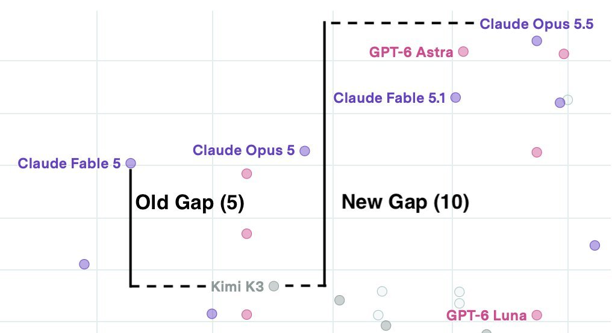

Kimi K3, released 90 days ago, is still the best open model according to the ECI. The frontier-open gap has literally doubled https://t.co/mVYhwvybvN


cited on: kimi-k3
Reproduced against link rot, credited and linked to its original. Yours and you’d rather it weren’t here? Open an issue.